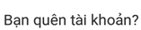

Bước 1: Ấn vào biểu tượng của ứng dụng để truy cập vào app.
Bước 2: Màn hình trang chủ hiện ra. Khách hàng cần nhập “Tên đăng nhập” và mật khẩu”
Bước 3: Nhấn “Đăng nhập”
- Hệ thống sẽ kiểm tra thông tin tài khoản
- Trong trường hợp đúng tên tài khoản/mật khẩu
- Nếu là lần đăng nhập đầu tiên sẽ chuyển sang trang “Thay đổi tài khoản và mật khẩu”.
- Nếu không phải là lần đầu tiên đăng nhập, sẽ vào trang chính của khách hàng.
- Trong trường hợp sai tên tài khoản/ mật khẩu, thông báo khách hàng sai “Tài khoản” hoặc “Mật Khẩu”.
- Trong trang chính của khách hàng có liên kết tới trang “Thay đổi mật khẩu”.
Lưu ý: khi khách hàng quên mật khẩu thì nhấn vào hệ thống
sẽ chuyển sang trang “Chọn loại khôi phục”, tại đây người sử dụng sẽ được hướng dẫn cách lấy lại tài khoản.